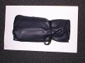
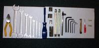
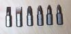
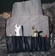

Apr 24, 2001
| I ordered, on April 17th (it being the 24th today), a BMW R-bike
toolkit from Motobins in the UK. I was a bit worried about shipping
time and/or cost (justified, as it turns out -- shipping was 19 pounds
sterling (about US$28), but only took a week), but decided that with the
exchange rate as it was, I could afford it.
The toolkit arrived today, and I eagerly unpacked it. This review is mostly a recitation of the contents of the kit, and my impressions (plus a few pictures). So, here goes: Contents of the kit, from left to right: |
 |
|
 |
|
 |
| |
|
It looks like a very complete toolkit. I can't really recall what all was in my R65's toolkit, and I may take a look at a stock BMW to see what's different. All the tools look at least moderately high quality (although the very small flathead looks kind of cheesy). The inclusion of tire irons and fuses is a nice touch (my R65 kit had neither, although that doesn't preclude them having been there at some point, I guess). The sockets especially are nice -- having a real sparkplug socket with the rubber insert in a nice change from the stamped-out tube in the K-bike kit, and which I seem to recall from the R65's kit. The roll itself is made of vinyl faux leather, and looks like it's fairly sturdy. The ties are some kind of fairly lightweight open-weave ribbon; not bad, but not terribly impressive either. The brands are not any that I've ever heard of, but I'm not a very well-informed tool buyer. The Elora tools are German, and I suspect that the Draper tools are English. The tire irons, as stated above, are unbranded. I'll have a chance to use this kit tonight, when I pick up my new R100S from the shipper, and have to re-attach the bits that were removed for shipping. I may have more to say on this subject. Update, 4/30/2001: The toolkit is indeed nice to use, and the tools are all quite functional as expected. I added two tools to the kit though, as they are quite useful: a 6" pair of channel-lock pliers, and a 6" adjustable crescent wrench. Both fit nicely in the kit. I also put in a pair of latex gloves, for on-the-road repairs, and will soon be adding a shop towel or something to wipe up fluids, or check the oil dipstick with. I think I would change out the magnetic screwdriver for one that had a smaller shank, to fit into tight spaces. Update, 6/6/2001: I also added a 6" pair of Vise-Grip pliers, which rounds out the kit very well. The latex gloves have been changed out for nitrile gloves, which don't break down with oil. |
 |
Created by Ian Johnston. Questions? Please mail me.
{kind=link}
{kind=link}
{kind=link}
{kind=link}